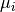
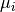
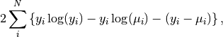

The Poisson cost function is designed to be applied to data, which has a low number of counts/events. In this scenario a fit is being performed using a model (function) to some low stats data.
The number of counts/events in bin  is given by
is given by  and the corresponding value for the model is .
Where the values of and are strictly positive.
and the corresponding value for the model is .
Where the values of and are strictly positive.
The quality of the fit can be represented numerically by the deviance ()

where the first two terms provide a measure for small variations between and , whereas the third term provides a measure of large variations.
Therefore, by minimizing the deviance the best fit can be identified.
This method is also known as the Poisson deviance or Poisson log-linear model.
When performing a fit on Poisson distributed data care needs to be taken when selecting the cost function. For a large number of events/counts the least squares cost function can be used to minimize Poisson distributed data. This is because in the limit of large numbers of events/counts the Poisson and Gaussian distributions are approximately equal. In the limits of low events/counts using a least squares cost function can lead to biased results.
Given a workspace with low counts, a fit can be done in a script as follows: Fit(Function=f,InputWorkspace=workspace,Output="outputName",CreateOutput=True,CostFunction="Poisson",Minimizer="Levenberg-MarquardtMD")
The plot below demonstrates the difference between using the Poisson and Least Squares cost functions for a given parameter over a series of fits to data with different number of counts. The Poisson model gives a much more consistent result and means no special treatment is required for zero counts.